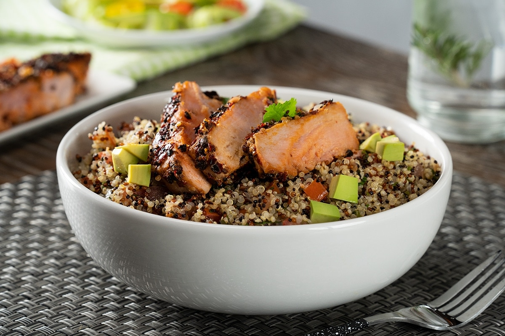

RECETAS SALUDABLES
A La Mexicana Con Atún
Si aún no has probado la quinoa, prueba esta receta fácil que te va a encantar, pues se acompaña con un lomo de atún en costra de chile, una combinación ideal y saludable. Disfruta esta receta de quino a la mexicana como comida o cena y en cualquier época del año, ¡te encantará!
Ver Receta

Hamburguesa Vegetariana
Las hamburguesas siempre son una preparación deliciosa, si tienes ganas de una hamburguesa, pero quieres evitar los carbohidratos de más, arma esta rica hamburguesa con un increíble “pan” de coliflor hecho con queso y cebollín. Además, la hamburguesa de portobello será tu fascinación.
Ver Receta
Ensalada De Lentejas Saludable
Las lentejas son un alimento con una alta concentración de nutrientes. Los hidratos de carbono son los más abundantes y están formados fundamentalmente por almidón. Prueba esta ensalada es ideal como comida o cena. Su sabor fresco, ácido y mediterráneo ¡Te encantará!
Ver Receta

Tortitas De Brócoli Con Queso
Estas tortitas de brócoli con queso son perfectas para los más peques, ya que presentan una forma divertida y deliciosa de comer vegetales. El brócoli es rico en fibra, vitamina A y C, calcio y hierro. Puedes utilizar estas tortitas como botana o como plato fuerte, acompañadas de una buena guarnición. ¡Les encantarán a tus hijos!
Ver Receta

Wraps De Lechuga De Carne
Si buscabas recetas saludables para llevar una dieta más balanceada y variada, prueba estos wraps de lechuga fresca rellenos de carne molida de res. Estos taquitos de lechuga son pequeños bocados de sabor salado y van muy bien acompañados de salsa de soya y ajonjolí. Una forma práctica de disfrutar lechugas. ¡Atrévete a hacerlas!
Ver Receta

Licuado Antioxidante
Si te encantan los sabores ácidos y los colores vivos, prueba este licuado de berries: fresa, frambuesa, mora azul y zarzamora que, combinados con leche de almendra, tienen como resultado el licuado con la consistencia cremosa ideal y una opción perfecta para consumir antes de ejercitarte. ¡Este licuado antioxidante de almendra te encantará!
Ver Receta